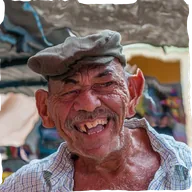

Fractale vervorming

Vervormt de laag met gevouwen fractale ruis, voor vuur, water en hittetrillingen.
Instellingen
| Instelling | Type | Bereik | Standaard |
|---|---|---|---|
| Sterkte | Getal | 0 tot 2 | 0.15 |
| Intensiteit | Getal | 0 tot 2 | 1 |
| Schaal | Getal | 0.01 tot 50 | 1 |
| Evolutie | Getal | -50 tot 50 | 0 |
| Complexiteit | Getal | 1 tot 9 | 4 |
| Seed | Getal | 0 tot 5 | 0 |
| Verschuiving | Punt (X, Y) | -100000 tot 100000 | 0, 0 |
| Parallax | Punt (X, Y) | -100000 tot 100000 | 0, 0 |
| Schermruimte | Aan of uit | – | Uit |
| Grootte van | Keuze | Laag, Scherm | Laag |